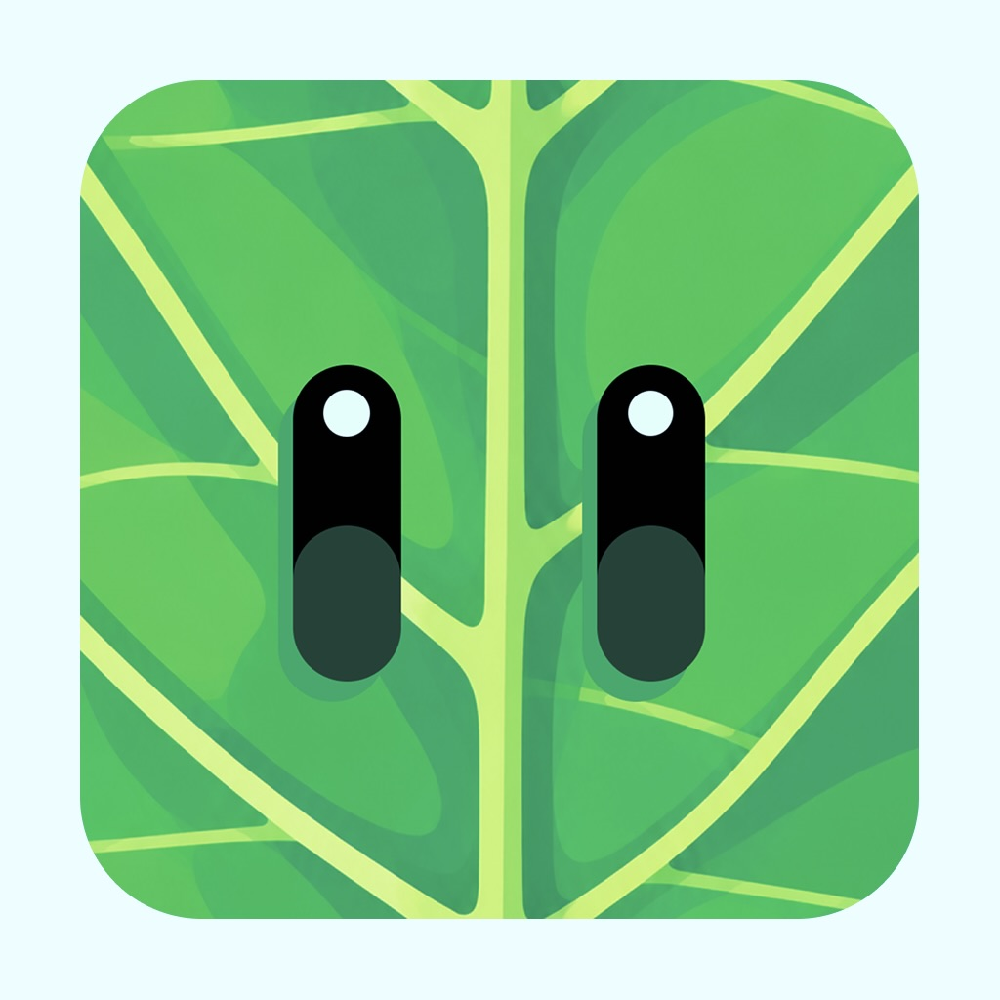

Learn a little.
Build your wildlife knowledge in small, approachable steps.

Near Nature A little closer to natureA little curiosity goes a long way
That bird on your walk. The butterfly in your garden. Learn to recognize the wildlife around you, one small discovery at a time.
Meet Near NatureAn educational app for your everyday outdoors.
A familiar face.
A new little discovery.
There’s a whole world waiting just outside.
Start with what you notice: a bird’s shape, its colors, and how it moves. Small details can help you tell your wild neighbors apart.
Less scrolling. More noticing.
Build your wildlife knowledge in small, approachable steps.
Get to know the details that make each animal distinctive.
Turn an ordinary walk into a chance to recognize something new.
A little more wonder. A little nearer to nature.